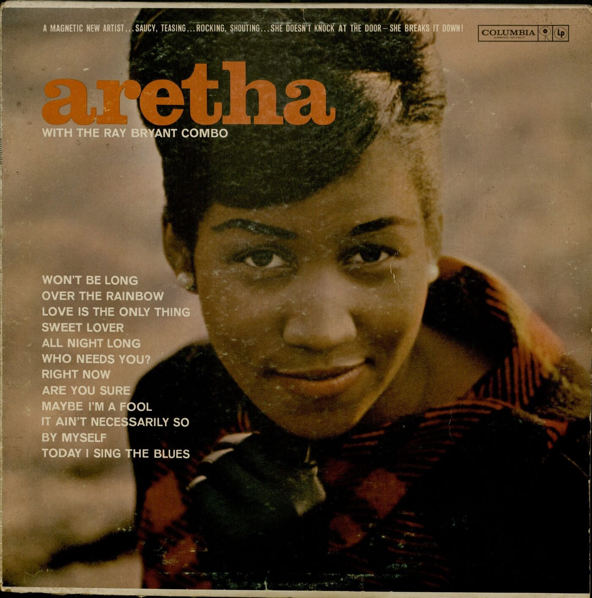
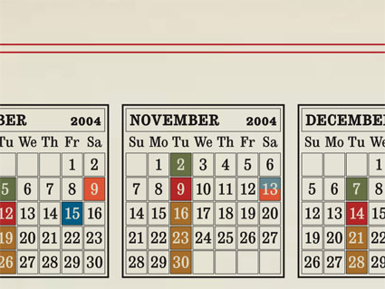
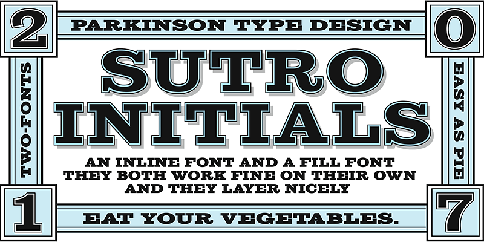

Although Clarendon was originally designed in 1845 by Robert Besley at Fann Street Foundry in London, it is now owned by URW Type Foundry which is a German company that “has a long and rich history in type design and engineering”. Named for the Clarendon Press in Oxford, Clarendon is popular for body text because of its easy to read letter shapes. Its serifs have sharp brackets, its x-height is large with a vertical stress, and its ascenders and descenders are short. Clarendon gained popularity on posters printed with wood type, like American Old West wanted posters. It is used today on National Park Service signage, by the Public Transport Company in Poland, as well as on the “Wheel of Fortune” wheel.
Sutro
Sutro is a bold slab serif typeface designed by Jim Parkinson in 2003. Parkinson has designed other fonts like ITC Bodoni and ParkinsonElectra. He has also designed logos for Newsweek, Rolling Stone, and The Wall Street Journal. Parkinson stated that his “interest in early square serif designs began in the 1970s when I drew a new version of Egiziano for Roger Black at New West Magazine.” This led to the creation of Sutro. Named for the mayor of San Francisco in Adolph Sutro, it is reminiscent of the Old West lettering at the Sutro Baths. It has a wide range of weights, some of which are shaded, hatched, or gradients and can be combined to get a layered, 3D, or colored effect. Because of its many weight options, it can be used in both a body text context or as a display setting.
Comparison
Similarities
When these two fonts are aligned at the baseline, their differences become apparent. Sutro (right) has taller ascenders and x-heights than Clarendon (left), but its descenders are slightly shorter. The lowercase "o" is overall very similar, the main differences being the width and the stress of the letterform.The stress and the serifs of the uppercase "A" marks the only differences.The lowercase "n" has few differences, the most prevalent being the curve of the Clarendon serif versus the slab of the Sutro serif.The top of the lowercase "l" marks the main difference. Clarendon's top is flat, while Sutro's is angled. However, overall they are very similar.The height and serifs mark the main differences in the uppercase "F" between the two fonts.The uppercase "Z" is very similar as well. The serifs and the height mark the only big difference.The stress of the uppercase "M" is different (and the serifs), but otherwise they are very similar. The uppercase "H" in Sutro is taller with blocky serifs, but it is still very similar looking to The "H" in Clarendon. The number "1" in Clarendon is thicker, shorter, and has curved serifs, but overall is very similar to Sutro. The main difference of the exclamation point is the curved (Clarendon) or flat (Sutro) top, but otherwise they are quite similar.
Differences
The lowercase "x" in Clarendon in thicker and has curved serifs. Sutro's "x" has an uneven cross, a more drastic stress, and blocky serifs.When overlapped, the lowercase "p" shows that the counter is narrower in Clarendon (blue), while the bowl is bigger in Sutro (orange). This comparisons also displays the difference between the serifs of the two fonts. The angle of Sutro's lowercase "i" has an angled top and the tittle is higher. Clarendon's serifs are more curved.The lowercase "c" in Clarendon bears a rounded terminal that marks the biggest difference. However, Sutro also has angled ends of the "c" and a more visible stress.Clarendon's lowercase "r" also has a round terminal and is thicker with a flat head serif. Sutro has a deeper notch.The uppercase "J" in Clarendon has a terminal and curved serifs. In Sutro, the tail is angled in toward the stem of the letterform and has a taller x-height.Clarendon's number "7" has a very curvy top and a barb that comes off the serif. Sutro's is much more straight forward, but the bottom of the serif is flat.The number "2" in Clarendon is very curvy and has a circular terminal. The "2" in Sutro is much flatter and blocky.The number "5" in Clarendon is wider, has a circular terminal, and a pointed flag. Sutro's "5" is narrower, has an angled tail, and more drastic notches. Clarendon's question mark has a terminal and is overall much more curvy than Sutro's straight and narrower form.The quote marks in Clarendon are more rounded and have a straight tail, compared to Sutro's angled one.Clarendon's at symbol is evenly stressed with a round counter. Sutro's is stressed, angled and has an oval-shaped counter.Although they look misaligned, these two brackets are in fact aligned on their baselines. Sutro's bracket is placed much higher and its notches are much more defined. Clarendon's are much more sturdy and thick.The asterisk in Clarendon is much bigger and has rounded ends. Sutro's is spikier and smaller.
Examples and visual references
Clarendon

Clarendon is showcased in the title "aretha" here.The English lettering in this graphic is shown in Clarendon."Martin Luther King, Jr." is displayed using Clarendon.The colorful lettering showcases Clarendon as well.
Sutro

Sutro can be used for things like calendars, keeping it simple yet effective.

Sutro can be displayed in many ways, these are two differrent styles Sutro offers.Rolling Stone showcases Sutro in their magazine as their chosen typeface.